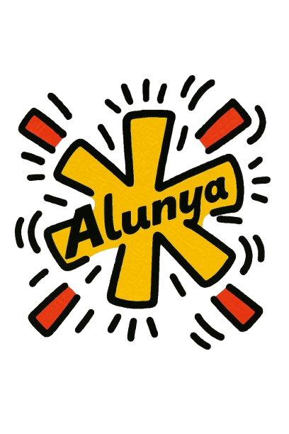

Inici del desenvolupament de Alunya
Alunya és una ploma estilogràfica creada per representar Catalunya, inspirada en el disseny elegant i funcional, aquesta ploma porta gravada una senyera i sovint es presenta amb elements tradicionals catalans. Aquest objecte es vol convertir en una icona de la cultura catalana, reflectint els valors de la identitat i la tradició amb un toc modern i accessible. La ploma Alunya no només és un símbol de creativitat i expressió, sinó que també fomenta l'orgull de la cultura catalana entre els joves, ajudant a mantenir viu l'interès per les tradicions i el patrimoni de Catalunya.
